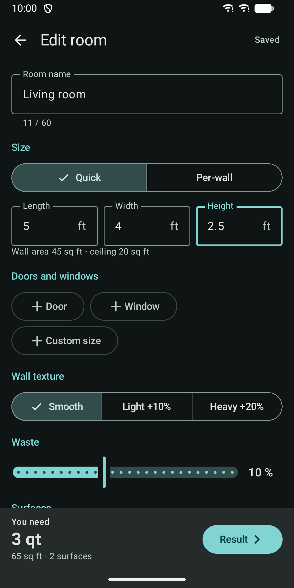
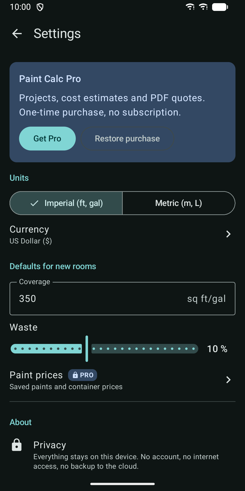
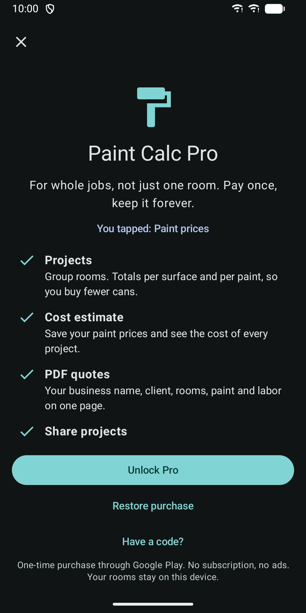

Paint Calc: Room Paint Amount
Work out how much paint a room needs, with coats, doors and waste







About
Paint Calc works out how much paint a room needs and rounds the result up to cans you can actually buy. It runs on your device with no account and no sign-in, so you can use it on site, in the shop or in a basement with no signal. QUICK OR WALL BY WALL - Quick mode: enter length, width and height and the wall area is worked out for you. - Per-wall mode: add walls one by one for odd-shaped rooms, stairwells and attic rooms. - Take off doors and windows with one tap using standard sizes, or enter custom sizes. EVERY SURFACE, YOUR WAY - Walls, ceiling, trim and primer, each with its own on/off switch, coats (1 to 4) and coverage. - Type the coverage printed on the can, in sq ft per gallon or m2 per litre. - Smooth, light or heavy texture adds 0, 10 or 20 percent more paint. - Waste slider from 0 to 25 percent. ANSWERS IN CANS, NOT DECIMALS - Imperial: gallons and quarts. When three quarts would cost more than a gallon, you get the gallon. - Metric: 5 L, 2.5 L, 1 L and 0.5 L tins. - See the total and the breakdown for each surface. SAVE AND SHARE - Save as many rooms as you like. - Share a room result as plain text with any app. - A home screen widget shows the paint for the last room or project you opened. PRO (ONE IN-APP PURCHASE) The features above are included in the base app. These features need the Pro purchase, made through Google Play: - Projects: group rooms and get totals per surface and per paint. Paint is pooled by product, so you can buy fewer cans than room by room. - Cost estimate: save your paint prices per can size and see the cost of each project in your currency. - PDF quotes: your business name, the client, the rooms, paint amounts, paint cost and an optional labor line. Share the PDF from your phone. - Share whole projects as text. PHONES AND TABLETS - Two-pane layout on tablets and foldables. - Light and dark theme follow your system setting. - Screen reader labels on controls and large touch targets. YOUR DATA STAYS ON YOUR DEVICE Paint Calc does not request the internet permission. Your rooms, projects and client names are stored only on this device and are excluded from cloud backup. The only connection is Google Play, for the optional Pro purchase. Results are estimates. Always check the coverage printed on your paint can.
Guides
- How Much Paint Do I Need for a Room? Formula and Example Work out the paint for any room: wall area, doors and windows, coats, waste and texture, with a worked example in gallons and a small calculator.
- How Much Paint for a 12x12 Room? Gallons by Room Size A 12x12 room with 8 ft walls needs about 2 gallons and 1 quart for two coats. Table of paint by room size, with the numbers behind it.
- Paint Coverage Converter: sq ft per Gallon to m² per Liter Convert paint coverage between sq ft per US gallon and m² per liter, with a table, the formula and a worked example for a room.